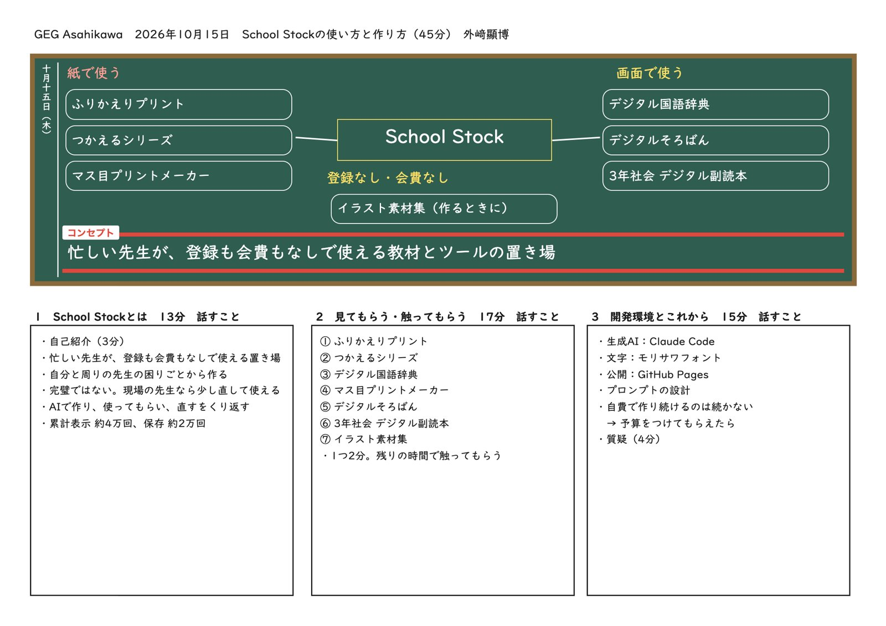

板書で見る、今日の45分
板書は、School Stock の「マス目プリントメーカー」の板書計画の型で作りました。黒板の下のらんに、話すことを書いています。

忙しい先生のための、教材とツールの置き場
忙しい先生が、登録も会費もなしで使える教材とツールの置き場です。
- 先生たちの時短につながればと思って作っています。
- 自分や周りの先生が困っていることから作り始め、AIを使って、作る、使う、直すをくり返しています。
- 完璧なものではありません。現場の先生なら少し直して使える、という感覚で作っています。
- 2026年7月末から数え始めて、ページは約4万回開かれ、教材は約2万回保存されています。
おすすめの7つ
道具ごとに2枚あります。1枚目は話す順番で、思考ツールボードのじゅんばんチャートで作りました。2枚目は板書で、左が困りごと、まん中がどんな道具か、右が使い方です。気になったものを開いて、触ってみてください。
どうやって作っているか
| 生成AI | Claude Code で、教材の中身を作り、紙面に組み、PDFに書き出しています。 |
|---|---|
| 文字 | 紙面の文字はモリサワのフォントで組んでいます。 |
| 考えの整理 | 話す順番は、School Stock の思考ツールボードで並べました。 |
| 公開 | GitHub Pages で公開しています。このページも同じです。 |
| プロンプト | 役割、条件、出力の形、差し替える欄を決めて頼んでいます。 |
これから
今は自費で作り、維持しています。この形のままでは長く続けられないので、予算をつけていただけたらと考えています。
School Stock
あとで探すときは「School Stock 教材」で検索してください。学校の端末でこのページが開けない場合は、スマートフォンでご覧ください。